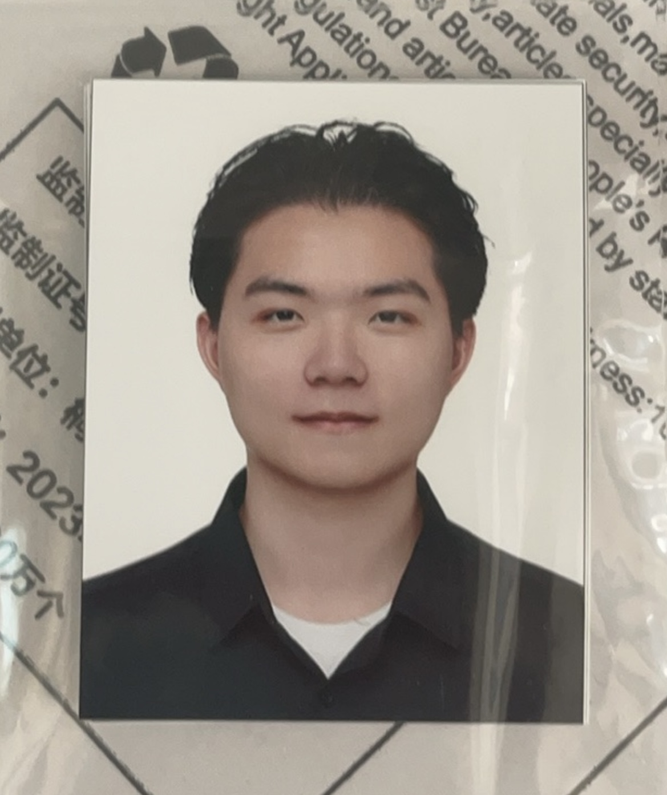

|
Bobby(Zhuoran) Peng I was a CS & Math undergrad & now master student at New York University's CILVR Lab, where I am fortunately advised by Prof Lerrel Pinto. My interest lies on Robot learning, particularly lifelong learning and multitask learning, and Computer Vision. I love simple ideas! In my spare time I cook, eat, play tennis, and watch anime. |
 |
{kind=link}
Research |
|
|
BAKU: An Efficient Transformer for Multi-Task Policy Learning
Siddhant Haldar, Zhuoran Peng, Lerrel Pinto NeurIPS, 2024 poster project page / arXiv A simple transformer architecture that enables efficient learning of multi-task robot policies. |

|
OPEN TEACH: A Versatile Teleoperation System for Robotic Manipulation
Aadhithya Iyer, Zhuoran Peng, Yiqing Shen Under Review, 2025 project page / arXiv Use Multi‑Granularity Non‑Local Self‑Similarity (MG‑NSS) prior for hyperspectral image (HSI) recovery, unifying coarse‑grained Tucker and fine‑grained FCTN decompositions to jointly capture global, local and non‑local cues. |
|
This is another Jon Barron's Template! |